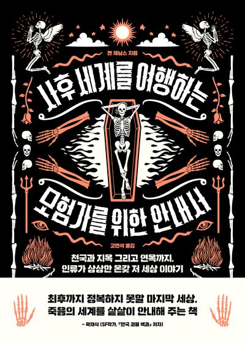
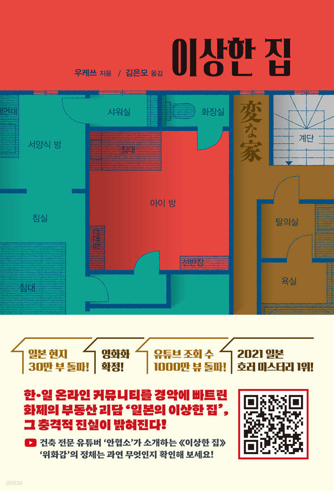
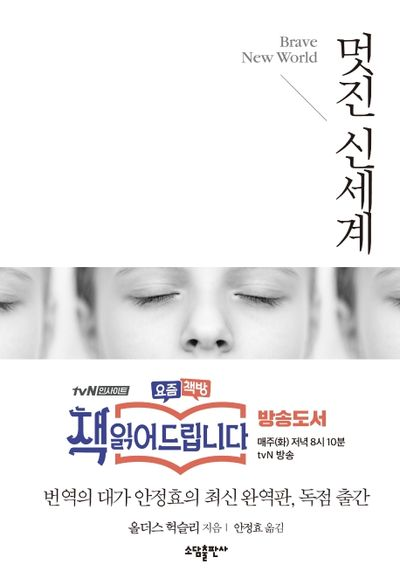
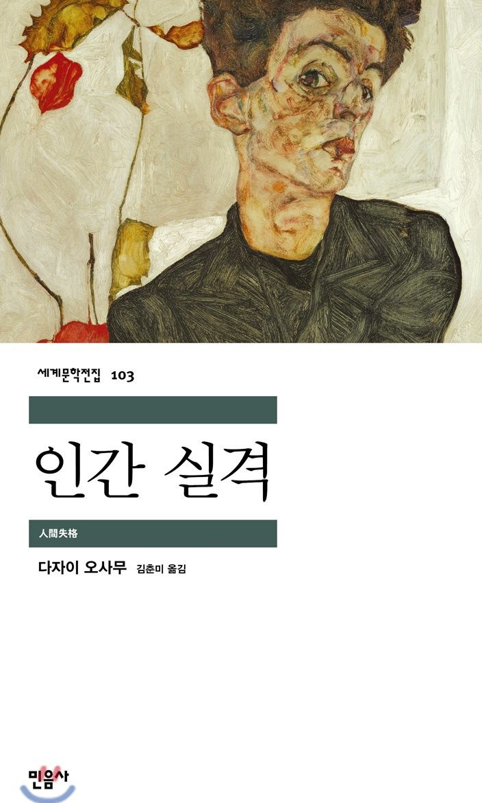

내가 읽었던 책들
" 의외로 독서하는 타입 "

밀실살인게임
진짜 내 인생소설중 하나라고 할 수 있다. 책 못 읽는 사람도 이건 읽을 수 있을 듯 하다. 게임처럼 흥미진진한 전개다.. (실제로 여기 주인공들은 게임처럼 생각하긴 한다. 살인 트릭을.,,,;;ㅋㅋ)

사후세계를 여행하는 모험가를 위한 안내서
원래 거의 추리소설? 밀실? 이런 주제만 보다가 표지에 강렬하게 이끌려서 구매해서 읽어보았다. 내가 N이라서 그런건지 모르겠지만 죽은 뒤에 세상을 계속 생각해보게 만드는 책이었다.

이상한 집
초반에 정말 재밌게 읽고 있었는데 점점 판타지스럽게 변해가는 전개에 조금 아쉬웠던 작품이다. 그래도 흥미로운 이야기였다. 이거 실화바탕이랬던가..

멋진 신세계
이 책을 읽으면 1984가 생각난다.. 비슷한데 다른 느낌이랄까. 이 책 읽고 1984를 안 읽어봤다면 읽어보는 것도 좋을 것 같다. 새로운 시선으로 볼 수 있을 듯..

달러구트 꿈 백화점
보는 장르가 읽고나면 빠져서 어질어질해지는 것들만 주로 읽다 보니 힐링이 필요해서 읽게 되었다. '내 꿈도 이런 과정을 거쳐서 꾸게 되는 걸까?'' 하고 살짝 웃음이 나는 느낌의 책이었다.

인간실격
음,,, 유명한 책이다. 나는 이 책을 소문으로만 듣고 읽어본적이 없었는데, 갑자기 당겨서 최근에 읽게 되었다. 한 사람의 인생이 이렇게까지 망가질수가 있구나..싶고 '부끄러운 삶을 살았습니다.' 라는 시작말조차 위선적인 것으로 보이게 하는. 그런 내용이다.